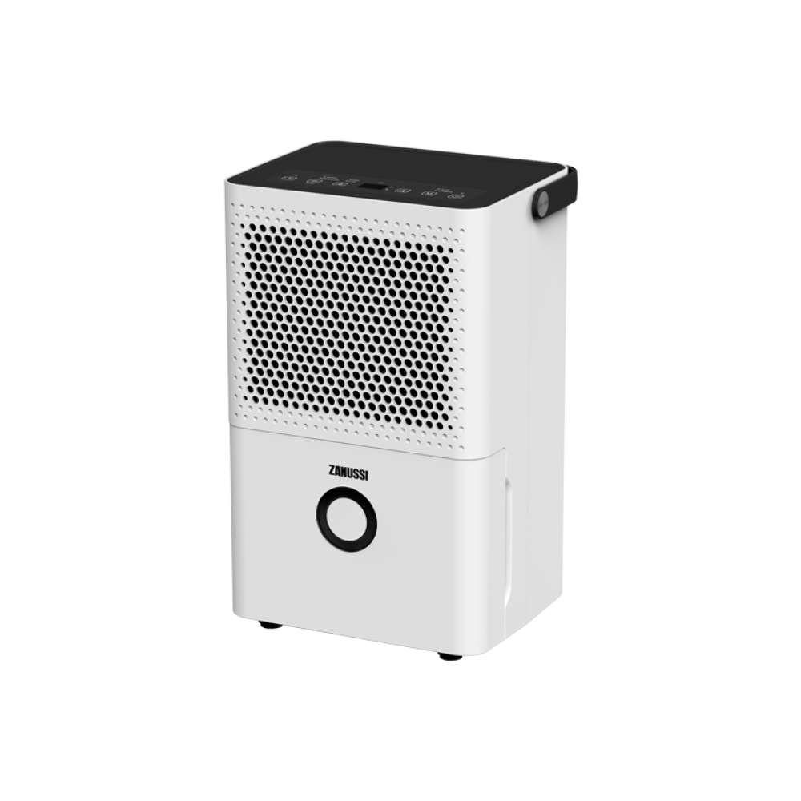

У нас можна взяти осушувач повітря напрокат подобово. Можлива доставка.
У ціну оренди входить вимірювання вологості осушуваних матеріалів і поверхонь . Ми також надаємо послугу осушення приміщення "під ключ " .
Список осушувачів і ціни для подобової оренди

Zanussi ZDH-12L
Обробляючи 80 м³ повітря на годину, збираючи 12 л конденсату на день і працюючи при температурі +5 – +32℃, він є універсальною технікою, що підходить для комерційних і житлових приміщень площею до 17м².
Багатофункціональний, надійний осушувач повітря. Є сенсорна панель керування, індикатори роботи приладу, таймер. Призначений для приміщень середнього розміру. Застосовуваний холодоагент - R410A. Ефективний для просушування приміщень до 30 м*2 після затоплень, під час будівництва тощо .
Багатофункціональний, надійний осушувач повітря високої продуктивності. Є дві сенсорні панелі керування, індикатори роботи приладу, заданого та наявного рівня вологості, температури, таймер. Ефективний для просушування приміщень до 40 м*2 після затоплень, під час будівництва тощо.
Багатофункціональний, надійний осушувач повітря підвищеної продуктивності. Є дві сенсорні панелі керування, індикатори роботи приладу, заданого та наявного рівня вологості, температури, таймер. Ефективний для просушування приміщень до 50 м*2 після затоплень, під час будівництва тощо.
Багатофункціональний, надійний осушувач повітря підвищеної продуктивності. Ефективний для просушування приміщень до 60 м*2 після затоплень, під час будівництва тощо.
Багатофункціональний, надійний осушувач повітря. Є сенсорна панель керування, індикатори роботи приладу, таймер. Ефективний для просушування приміщень до 60 м*2 після затоплень, під час будівництва тощо . Має функцію примусового відкачування води з накопичувального бака.
Багатофункціональний, надійний осушувач повітря підвищеної продуктивності. Є дві сенсорні панелі керування, індикатори роботи приладу, заданого та поточного рівня вологості, температури, таймер. Ефективний для просушування приміщень до 80 м*2 після затоплень, під час будівництва тощо. Має вбудовану помпу та довгий шланг , що дає змогу осушувачу працювати абсолютно автономно. Дуже зручно в тому разі , якщо нікому виливати воду з бункера.
Багатофункціональний, надійний осушувач повітря підвищеної продуктивності. Є дві сенсорні панелі керування, індикатори роботи приладу, заданого та поточного рівня вологості, температури, таймер. Ефективний для просушування приміщень до 80 м*2 після затоплень, під час будівництва тощо. Має вбудовану помпу та довгий шланг , що дає змогу осушувачу працювати абсолютно автономно. Дуже зручно в тому разі , якщо нікому виливати воду з бункера.
Промисловий осушувач для роботи у великих приміщеннях. Фільтр грубого очищення. Оснащений роторними компресорами Panasonic/Функція автостарту. Автоматично вмикає режим осушення, попередньо встановлений до вимкнення осушувача. Функція авторозморожування. За потреби автоматично буде ввімкнено нагрівач, не даючи системі замерзнути
Промисловий осушувач колонного типу для роботи у великих приміщеннях. Оснащений системою примусового відкачування конденсату, тому не потребує постійного нагляду за його роботою. Розміри: 480/295/1675 мм.
Продуктивність осушення
120 л/добу
Потужність
1.75 КВт
Об’єм бака для збору конденсату
постійне відкачування
Витрата повітря
1000 м³/год
Вага
78 кг
Детальніше про модель
Діапазон осушення від 99% до 10%
Діапазон температури в приміщенні від 5°C до 38°C
Рекомендована площа до 200 м кв
Осушувачі повітря здебільшого застосовують у будівництві, на етапі внутрішнього оздоблення приміщень. Осушувач допоможе висушити стіни та підлогу після штукатурення або прибрати зайву вологу перед поклейкою шпалер. Досвід показує, що це дуже ефективний засіб, а іноді - якщо терміни завершення будівництва стислі - просто незамінний, особливо в сиру та холодну погоду.
Незважаючи на те, що промислове обладнання заведено застосовувати за його безпосереднім призначенням, на будівельному майданчику, однак від неприємностей не застрахований ніхто. Наприклад, повернувшись з роботи, ви виявили, що вашу квартиру залили сусіди зверху, і тоді ви не сидітимете склавши руки, чекаючи, поки само висохне. Вам на допомогу прийде оренда осушувачів повітря, яку пропонує наша компанія на неймовірно вигідних умовах і зі швидкою доставкою. Ви практично за короткий час зможете взятися за усунення стихійного лиха, що звалилося на вашу голову цілком несподівано.
Насамперед, обґрунтовуючи необхідність наших послуг, варто зазначити, що в побутових ситуаціях зовсім не часто доводиться користуватися такою складною технікою, призначеною зовсім для інших цілей. Тому оренда осушувачів повітря київ є неймовірно вигідною пропозицією, зважаючи на те, в яку суму вам може обійтися придбання такого солідного апарата, якому більшу частину свого існування доведеться провести в коморі. Крім того, наші співробітники швидко навчать вас користуватися цим агрегатом без сторонньої допомоги.
Навіть якщо ви затіяли капітальний ремонт, ґрунтовно вклавшись у придбання необхідних матеріалів, вам зовсім не обов’язково витрачати чималу суму на купівлю дорогого апарата, застосувати який вам доведеться один-два рази. Оренда осушувачів являє собою цілу низку вигод, які ви отримуєте:
значна економія
оперативність доставки
прозорість договору
навчання ефективному застосуванню
Таким чином, ви отримуєте цілу низку переваг, коли, скориставшись технікою, просто повертаєте її фірмі. Зате вам потім не доведеться розмірковувати, куди ще застосувати річ, у яку вкладено стільки грошей.
Наша пропозиція
Насамперед необхідно розповісти, що оренда осушувача повітря є вельми затребуваним видом послуг. Передусім це особливо виручає, коли вашу квартиру раптово затопило через прорив водопровідної труби. Звісно, необхідно одразу братися до порятунку речей, та не купувати ж заради цього такий дорогий агрегат, яким вам, судячи з усього, нескоро доведеться скористатися знову, щоб виправдати таке значне капіталовкладення. Краще заощаджені гроші спрямувати на усунення наслідків доволі неприємного інциденту.
Що на практиці
Попри ту обставину, що цей вид техніки належить до розряду кліматичної, про його повсюдне застосування говорити не доводиться, особливо в побуті. Проте стверджувати, що потреби в його застосуванні немає, теж передчасно. Тому, щоб не бути захопленими зненацька, пропонована нашою компанією оренда осушувача повітря є цілком логічним і закономірним виходом із найнепередбачуваніших обставин. Особливо корисно скористатися замовленим у нас апаратом у ванній кімнаті, щоб позбавити її надмірної вологості.
Що в підсумку
Як показує життєва практика, застосування такого агрегата є справою доволі рідкісною, якщо не сказати унікальною, тож чи не краще буде скористатися перевагами послуги оренда осушувача, ніж витрачати неймовірно великі гроші на той прилад, яким вам практично не доведеться більше користуватися. Разом з тим, навіть якщо у вас є великий акваріум, то й у цьому випадку вам нечасто траплятиметься займатися осушенням свого приміщення. До того ж, поряд із цим апаратом наша компанія може запропонувати вам ще цілу низку пристроїв та агрегатів, практикуватися в застосуванні яких вам доведеться вельми рідко.
Про компанію
Працюємо з 1990-х і все робимо самі
Ми продаємо та здаємо в оренду кулери, фільтри й пурифаєри, самі їх встановлюємо, чистимо та ремонтуємо. У нас власна майстерня, штатні майстри та склад запчастин, тому ми не залежимо від підрядників.
25+років на ринку, з 1990-х
5 000+кулерів, фільтрів і пурифаєрів обслужили та відремонтували
Десяткикомпаній та офісів на постійному обслуговуванні
7 днівна тиждень на зв’язку, з 9:00 до 19:00
Власна майстерня
Ремонтуємо у власній майстерні. Запчастини на ходові моделі є в наявності, чекати поставку не потрібно.
Власні майстри
Штатні спеціалісти з багаторічним досвідом. Вони знають усе обладнання, яке ми продаємо та здаємо в оренду.
Будь-яке обладнання
Підлогові та настільні кулери, пурифаєри, системи зворотного осмосу, промислові фільтри будь-яких брендів.
Повний цикл
Підбір, купівля або оренда, доставка, встановлення, обслуговування та ремонт. Усе в одній компанії, за одним телефоном.
Нам довіряють
і десятки офісів, клінік, шкіл і виробництв Києва, сотні приватних домогосподарств
Зателефонуйте або напишіть нам
Розкажіть, що сталося з кулером, фільтром або пурифаєром. Домовимося про виїзд або доставку в майстерню.